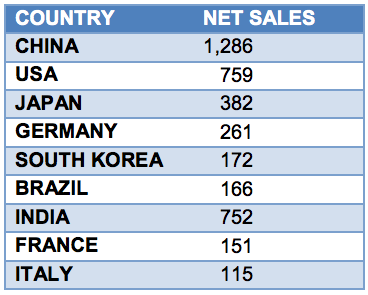
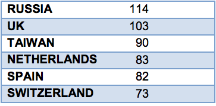
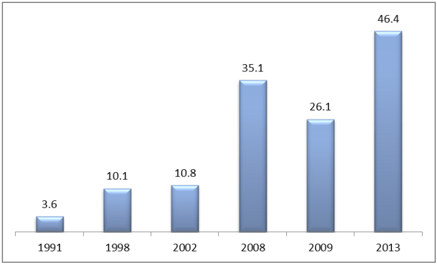
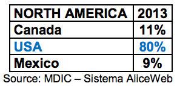

Return to top
Net sales for the Brazilian chemical industry in 2013, taking into account all segments, were US$ 162.3 billion, a 10.7% increase over the prior year. Brazil is the world’s sixth-largest chemical industry, surpassed only by (in order) China, USA, Japan, Germany and South Korea; and is forecast to surpass South Korea by 2020. Rounding out the top 15 are India, France, Italy, Russia, UK, Taiwan, Netherlands, Spain, and Switzerland.
According to the Brazilian Chemical Industry Association (ABIQUIM), net sales for Brazil’s chemical industry have increased 292% over the past 19 years, growing from US$41.4 to US$162.3 billion. Imports continued a year-over-year increase, reaching US$46.4 billion. However, Brazil’s chemical industry trade deficit continues, with exports from the country reaching only US$14.2 billion in 2013. Countries from Mercosul and North America were the main destinations for Brazilian chemical exports in 2011: Argentina, Paraguay and Uruguay imported US$3.2 billion, while the United States, Canada and Mexico bought US$3 billion.
Brazil imported a volume of 37.5 million tons of chemical products in 2013, comprised of the following:
BRAZIL IS THE 6TH LARGEST CHEMICAL INDUSTRY IN THE WORLD


The country has 2,500 chemical companies operating, comprising 2.8% of the Brazilian GDP. Brazil’s chemical industry is responsible for 390,000 direct jobs and more than two million indirect jobs.
Return to top
The most active chemical sector segments in Brazil in 2013 in net sales (US$ billions) were:
Return to top
As trade deficit statistics indicate, Brazil is by no means self- sufficient in the chemical sector. Imports have been increasing significantly as follows (in US$ billions):

As of May 2014, Brazil has already imported US$17.4 billion of products and raw materials for the year, adding to the projected deficit of US$33.5 billion.
Brazil imported a total of US$ 12.5 billion from North American suppliers in 2013, 80% (US$ 10 billion) of which came from U.S. companies:

While an excellent market for U.S. chemical products, Brazil’s chemical sector mounts several challenges to importers, including:
Product registration: Several chemical products, including raw materials, must be registered with governmental agencies, such as the Brazilian Federal Police and the Brazilian Army; and may also require registration with municipal, state and federal agencies.
Import taxes and duties: Brazil’s costly and complex cascading tax system and import duties can be challenging for some U.S. chemical companies. However, Brazilian chemical importers and customers trust in the quality of U.S. chemicals and, in some cases, may opt to pay more for U.S. products. Suppliers in Germany, France and UK are strongest competitors for United States exporters.
Competition from Mercosul: Since Brazil is part of Mercosul, its fellow member countries Argentina, Paraguay and Uruguay can export to Brazil with lower or no taxes.
Mercosur International Agreements: Chemical suppliers within Mercosur member countries benefit from several unilateral and regional international agreements. Brazilian suppliers, meanwhile, reap similar benefits through the country’s unilateral trade agreements with five Latin American countries.
Return to top
Brazilian Chemical Industry Association (ABIQUIM) www.abiquim.org.br